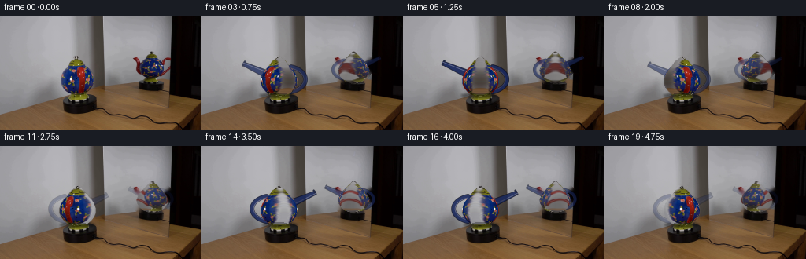
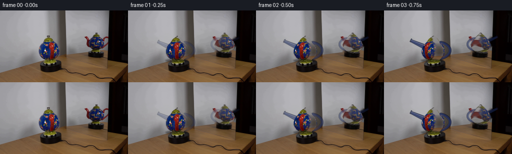

CODING AGENTS AS PIXEL WORLD MODELS
traex/GPT-5.6-Sol · 0123
点击播放 · 原生 RGB 像素
逐轮保存的候选
回放视频、检查图与代码变化。
每份候选均可单独播放。实际图片检查记录在下方工具轨迹中。
候选 01播放与检查图
点击播放 · 原生 RGB 像素


展开代码变化
--- 上一保存版本
+++ 本次保存版本
@@ -0,0 +1,216 @@
+from pathlib import Path
+import math
+import cv2
+import numpy as np
+from PIL import Image
+import artifact_io
+
+# Analytic, image-based reconstruction of the small turntable demonstration.
+# The room, mirror and turntable are held absolutely stationary; only the
+# ceramic pot and its optical image are redrawn.
+ROOT = Path(__file__).resolve().parent
+first = np.asarray(Image.open(ROOT / "first_frame.png").convert("RGB"), dtype=np.uint8)
+H, W = first.shape[:2]
+
+
+def soft_polygon_mask(points, blur=1.05):
+ """Antialiased mask from subpixel-upsampled geometry."""
+ s = 4
+ m = np.zeros((H*s, W*s), np.uint8)
+ p = np.rint(np.asarray(points) * s).astype(np.int32)
+ cv2.fillPoly(m, [p], 255, lineType=cv2.LINE_AA)
+ m = cv2.resize(m, (W, H), interpolation=cv2.INTER_AREA).astype(np.float32) / 255.0
+ if blur:
+ m = cv2.GaussianBlur(m, (0, 0), blur)
+ return np.clip(m, 0, 1)
+
+
+# Conservative silhouettes used to remove the initial pot and its mirror image.
+# They stop at the lip of the black platform, so the turntable itself is retained.
+remove_real = soft_polygon_mask([
+ (95,50),(102,52),(106,58),(111,62),(117,66),(121,73),
+ (123,82),(121,91),(116,97),(111,101),(87,101),(79,97),
+ (74,89),(73,80),(76,71),(82,64),(89,60),(91,54)
+], 0.35)
+remove_mirror = soft_polygon_mask([
+ (189,43),(198,45),(203,49),(213,50),(218,55),(217,69),
+ (212,78),(207,84),(181,86),(173,83),(168,77),(168,65),
+ (169,56),(181,52),(185,47)
+], 0.35)
+
+# Fill only these two compact regions. Telea interpolation is especially
+# effective here because both fields are smooth, slightly mottled gray glass/wall.
+inpaint_mask = ((np.maximum(remove_real, remove_mirror) > .06) * 255).astype(np.uint8)
+background = cv2.inpaint(first, inpaint_mask, 4, cv2.INPAINT_TELEA)
+# Keep the platform/table exactly from the source wherever no ceramic overlaps.
+background[102:] = first[102:]
+
+
+def radius_real(y):
+ # Rotational body profile, sampled in image coordinates.
+ knots_y = np.array([51,53,56,60,64,68,73,79,85,90,95,99,101], np.float32)
+ knots_r = np.array([ 1, 4, 8,11,14,18,21,23,23,21,17,12, 4], np.float32)
+ return np.interp(y, knots_y, knots_r, left=0, right=0)
+
+
+def radius_ref(y):
+ knots_y = np.array([44,47,50,54,58,63,68,73,78,82,85], np.float32)
+ knots_r = np.array([ 1, 4, 7,11,15,18,20,19,16,11, 3], np.float32)
+ return np.interp(y, knots_y, knots_r, left=0, right=0)
+
+
+def profile_alpha(cx, y0, y1, radius_fun):
+ a = np.zeros((H, W), np.float32)
+ for y in range(max(0,y0-2), min(H,y1+3)):
+ r = float(radius_fun(y))
+ if r <= 0: continue
+ # smooth one-pixel coverage at the silhouette
+ xx = np.arange(W, dtype=np.float32)
+ a[y] = np.clip(r + .65 - np.abs(xx-cx), 0, 1)
+ return cv2.GaussianBlur(a, (0,0), .42)
+
+
+alpha_real = profile_alpha(98.0, 50, 101, radius_real)
+alpha_ref = profile_alpha(193.0, 43, 85, radius_ref)
+
+
+def cylindrical_sprite(source, cx, y0, y1, rfun, theta, alpha):
+ """Turn the source paint around a body of revolution.
+
+ Inverse cylindrical mapping makes glaze marks migrate around the curved
+ surface instead of merely sliding a flat cutout. Periodic sine naturally
+ supplies a subdued approximation to the unseen reverse side.
+ """
+ yy, xx = np.mgrid[0:H, 0:W].astype(np.float32)
+ rr = np.zeros(H, np.float32)
+ for y in range(max(0,y0-2), min(H,y1+3)):
+ rr[y] = max(.01, float(rfun(y)))
+ rimg = rr[:,None]
+ u = np.clip((xx-cx)/np.maximum(rimg, .01), -.999, .999)
+ ang = np.arcsin(u)
+ sx = cx + rimg * np.sin(ang + theta)
+ sy = yy
+ tex = cv2.remap(source, sx.astype(np.float32), sy.astype(np.float32),
+ cv2.INTER_CUBIC, borderMode=cv2.BORDER_REFLECT_101)
+ # Moving Lambert-like highlight gives volume while retaining source texture.
+ normal = np.sqrt(np.maximum(0, 1-u*u))
+ light = .91 + .11*np.clip(normal*.72 + u*.30, 0, 1)
+ tex = np.clip(tex.astype(np.float32)*light[...,None], 0,255).astype(np.uint8)
+ return tex, alpha
+
+
+def rgba_geometry(cx, base_y, s, reflected=False):
+ """Render handle and rising spout as the projected asymmetries of a teapot."""
+ S = 4
+ canvas = np.zeros((H*S, W*S, 4), np.uint8)
+ mag = abs(s)
+ if mag < .035:
+ return np.zeros((H,W,3),np.uint8), np.zeros((H,W),np.float32)
+ # Clockwise viewed from above: the formerly front-facing spout swings left.
+ direction = -1 if s > 0 else 1
+ if reflected:
+ direction *= -1
+ # Scale down for the image receding in the mirror.
+ sc = .76 if reflected else 1.0
+ cy = base_y
+ body_r = 18*sc
+ ext = (17 + 13*mag)*sc
+ # Handle is opposite the spout and goes behind the body.
+ hs = -direction
+ hx = cx + hs*(body_r + (7+8*mag)*sc)
+ col_outline = (10,17,48, int(220*mag))
+ col_blue = (24,39,91, int(235*mag))
+ col_hi = (55,66,119, int(155*mag))
+ # Use an ellipse arc with the body later covering its inner half.
+ axes = (int((body_r+9*sc)*S), int(17*sc*S))
+ center = (int((cx + hs*7*sc)*S), int((cy+1*sc)*S))
+ if hs > 0: start,end = -72,72
+ else: start,end = 108,252
+ cv2.ellipse(canvas, center, axes, 0, start, end, col_outline,
+ max(2,int(5.3*sc*S)), cv2.LINE_AA)
+ cv2.ellipse(canvas, center, axes, 0, start, end, col_blue,
+ max(1,int(3.3*sc*S)), cv2.LINE_AA)
+ cv2.ellipse(canvas, center, (max(1,axes[0]-2*S),max(1,axes[1]-2*S)),
+ 0,start,end,col_hi,max(1,int(.7*sc*S)),cv2.LINE_AA)
+ # Upturned spout: broad attachment, tapering neck, small lip.
+ side = direction
+ bx = cx + side*body_r*.67
+ by = cy - 4*sc
+ tx = cx + side*(body_r+ext)
+ ty = cy - (15+5*mag)*sc
+ vx,vy = tx-bx,ty-by
+ ln=max(1,math.hypot(vx,vy)); nx,ny=-vy/ln,vx/ln
+ wb,wt=5.4*sc,2.6*sc
+ poly=np.array([
+ ((bx+nx*wb)*S,(by+ny*wb)*S),
+ ((tx+nx*wt)*S,(ty+ny*wt)*S),
+ ((tx-nx*wt)*S,(ty-ny*wt)*S),
+ ((bx-nx*wb)*S,(by-ny*wb)*S)],np.int32)
+ cv2.fillPoly(canvas,[poly],col_outline,lineType=cv2.LINE_AA)
+ # inner inset produces ceramic blue and a longitudinal specular edge
+ wb2,wt2=4.2*sc,1.7*sc
+ poly2=np.array([
+ ((bx+nx*wb2)*S,(by+ny*wb2)*S),
+ ((tx+nx*wt2)*S,(ty+ny*wt2)*S),
+ ((tx-nx*wt2)*S,(ty-ny*wt2)*S),
+ ((bx-nx*wb2)*S,(by-ny*wb2)*S)],np.int32)
+ cv2.fillPoly(canvas,[poly2],col_blue,lineType=cv2.LINE_AA)
+ p1=(int((tx+nx*2.8*sc-side*1.5*sc)*S),int((ty+ny*2.8*sc)*S))
+ p2=(int((tx-nx*2.8*sc-side*1.5*sc)*S),int((ty-ny*2.8*sc)*S))
+ cv2.line(canvas,p1,p2,col_outline,max(1,int(2*sc*S)),cv2.LINE_AA)
+ cv2.line(canvas,(int((bx+nx*2.6*sc)*S),int((by+ny*2.6*sc)*S)),
+ (int((tx+nx*.9*sc)*S),int((ty+ny*.9*sc)*S)),col_hi,
+ max(1,int(.65*sc*S)),cv2.LINE_AA)
+ small=cv2.resize(canvas,(W,H),interpolation=cv2.INTER_AREA)
+ return small[:,:,:3], small[:,:,3].astype(np.float32)/255.
+
+
+def over(dst, rgb, a):
+ return np.clip(dst.astype(np.float32)*(1-a[...,None]) +
+ rgb.astype(np.float32)*a[...,None],0,255).astype(np.uint8)
+
+
+frames=[]
+for i in range(20):
+ if i == 0:
+ frames.append(first.copy())
+ continue
+ # Exactly 18 degrees per captured frame: almost one full, steady revolution.
+ theta = 2*math.pi*i/20.0
+ s = math.sin(theta)
+ frame = background.copy()
+
+ # Stable contact shadows anchor both images; only their slight asymmetry moves.
+ shadow=np.zeros((H,W),np.float32)
+ cv2.ellipse(shadow,(int(98-1.5*s),100),(22,3),0,0,360,.48,-1,cv2.LINE_AA)
+ shadow=cv2.GaussianBlur(shadow,(0,0),1.5)
+ frame=(frame.astype(np.float32)*(1-shadow[...,None])).astype(np.uint8)
+
+ # Mirror geometry, then mirror ceramic body. Its projection reverses horizontal
+ # motion, while the angular phase remains physically synchronized.
+ gr,ga=rgba_geometry(193,67,s,True)
+ frame=over(frame,gr,ga*.70)
+ tr,ar=cylindrical_sprite(first,193,43,85,radius_ref,-theta,alpha_ref)
+ # glass lowers contrast and lends the source mirror's warm gray cast
+ tr=(tr.astype(np.float32)*.80 + np.array([31,29,27],np.float32)).clip(0,255).astype(np.uint8)
+ frame=over(frame,tr,ar*.91)
+
+ # Handle is laid down first (behind the body); spout shares the same geometry
+ # layer but its broad base is naturally hidden by the opaque body.
+ gg,ag=rgba_geometry(98,79,s,False)
+ frame=over(frame,gg,ag)
+ tex,a=cylindrical_sprite(first,98,50,101,radius_real,theta,alpha_real)
+ frame=over(frame,tex,a)
+
+ # A tiny sharp foot/contact band prevents any impression of floating.
+ foot=np.zeros((H,W),np.float32)
+ cv2.ellipse(foot,(98,99),(11,2),0,0,360,.72,-1,cv2.LINE_AA)
+ foot*=np.clip(alpha_real,0,1)
+ dark=np.zeros_like(frame); dark[:]=[8,8,14]
+ frame=over(frame,dark,foot*.45)
+ frames.append(frame)
+
+frames=np.stack(frames).astype(np.uint8)
+assert frames.shape==(20,144,256,3)
+assert np.array_equal(frames[0],first)
+artifact_io.save(frames, ROOT)
可观测工具轨迹
实际执行的命令与返回图片。
命令 1exit 0
/bin/bash -lc 'cat GENERATION_RULES.md'
命令 2exit 0
/bin/bash -lc "cat prompt.txt && printf '\\n---FILES---\\n' && find . -maxdepth 2 -type f -printf '%p\\n' | sort"
命令 3exit 0
/bin/bash -lc "python3 - <<'PY'
from PIL import Image
im=Image.open('first_frame.png')
print(im.mode, im.size)
import numpy as np
x=np.asarray(im)
print(x.min(),x.max(),x.mean(axis=(0,1)),x.std(axis=(0,1)))
PY"命令 4exit 0
/bin/bash -lc "python3 - <<'PY'
from PIL import Image
import numpy as np
from sklearn.cluster import KMeans
im=np.asarray(Image.open('first_frame.png'))
h,w,_=im.shape
# grid avg 8x8, print luminance chars + dominant color code
lum=im.mean(2)
chars=' .:-=+*#%@'
for yy in range(0,h,4):
s=''
for xx in range(0,w,4):
p=im[yy:yy+4,xx:xx+4].mean((0,1)); l=p.mean()
c=chars[min(9,int(l/256*10))]
# hue category uppercase if sat
if p.max()-p.min()>40:
c='R' if p.argmax()==0 else ('G' if p.argmax()==1 else 'B')
s+=c
print(s)
print('kmeans')
x=im.reshape(-1,3)
km=KMeans(12,random_state=0,n_init=4).fit(x[::4])
cent=km.cluster_centers_.round().astype(int)
print(cent)
lab=km.predict(x).reshape(h,w)
for k,c in enumerate(cent):
ys,xs=np.where(lab==k)
print(k,c,len(xs), (xs.min(),ys.min(),xs.max(),ys.max()), 'centroid',xs.mean(),ys.mean())
PY"命令 5exit 0
/bin/bash -lc "python3 - <<'PY'
from PIL import Image
import numpy as np, cv2
im=np.array(Image.open('first_frame.png'))
# comps dark and blue, red dominance
for name,m in [('dark',(im.max(2)<45).astype('uint8')),('blue',((im[:,:,2]>im[:,:,0]*1.25)&(im[:,:,2]>im[:,:,1]*1.2)&(im[:,:,2]>45)).astype('uint8')),('warm',((im[:,:,0]>im[:,:,2]*1.5)&(im[:,:,0]>im[:,:,1]*1.15)&(im[:,:,0]>55)).astype('uint8'))]:
n,l,st,cent=cv2.connectedComponentsWithStats(m,8)
print('\\n',name,'total',m.sum())
for i in np.argsort(st[1:,4])[::-1][:15]+1:
if st[i,4]>=5: print(st[i].tolist(),cent[i].round(1).tolist())
# print sampled RGB regions every 8px with key type
print('color categories 2x down, bounds x64-224 y40-112')
for y in range(40,112,2):
s=''
for x in range(64,224,2):
p=im[y:y+2,x:x+2].mean((0,1)); mx=p.max(); mn=p.min()
if mx<25:c='K'
elif mx<50:c='k'
elif p[2]>p[0]*1.4 and p[2]>p[1]*1.25:c='B'
elif p[0]>p[2]*1.5 and p[0]>p[1]*1.15:c='R'
elif mx-mn<10:c='.' if mx<100 else ('+' if mx<150 else '#')
elif p[0]>p[2]*1.25:c='w'
else:c='-'
s+=c
print(f'{y:03}',s)
PY"命令 6exit 0
/bin/bash -lc "python3 - <<'PY'
import cv2, numpy as np
from PIL import Image
im=np.array(Image.open('first_frame.png'))
# actual ROI saturation mask with object signature y45:103 x70:125
for tag,(x0,x1,y0,y1) in {'obj':(68,127,42,105),'ref':(158,218,42,100)}.items():
r=im[y0:y1,x0:x1]; mx=r.max(2); mn=r.min(2)
sat=(mx-mn)
if tag=='obj': m=((sat>15)&((r[:,:,2]>r[:,:,0]+8)|(r[:,:,0]>r[:,:,2]+8))).astype(np.uint8)
else: m=((sat>12)&((r[:,:,2]>r[:,:,0]+6)|(r[:,:,0]>r[:,:,2]+6))).astype(np.uint8)
m=cv2.morphologyEx(m,cv2.MORPH_CLOSE,np.ones((5,5),np.uint8));
n,l,st,c=cv2.connectedComponentsWithStats(m)
i=1+np.argmax(st[1:,4]); mm=(l==i).astype(np.uint8)
# row runs
print(tag, st[i].tolist())
for y in range(mm.shape[0]):
xs=np.where(mm[y])[0]
if len(xs): print(y+y0, (xs.min()+x0,xs.max()+x0),len(xs))
cv2.imwrite('.tmp/'+tag+'mask.png',mm*255)
PY"命令 7exit 0
/bin/bash -lc "cat artifact_io.py && python3 - <<'PY'
import cv2,numpy as np
from PIL import Image
im=np.array(Image.open('first_frame.png'))
# print Canny in actual and ref ROIs at 1 char/pixel
for name,(x0,y0,x1,y1) in [('obj',(65,42,135,108)),('ref',(150,40,220,102))]:
g=cv2.cvtColor(im[y0:y1,x0:x1],cv2.COLOR_RGB2GRAY)
e=cv2.Canny(g,25,60)
print('\\n',name)
# 2x2 blocks
for y in range(0,len(g),2):
print(''.join('#' if e[y:y+2,x:x+2].any() else ' ' for x in range(0,g.shape[1],2)))
PY"命令 8exit 130
/bin/bash -lc "cat > generate.py <<'PY'
from pathlib import Path
import math
import cv2
import numpy as np
from PIL import Image
import artifact_io
# Analytic, image-based reconstruction of the small turntable demonstration.
# The room, mirror and turntable are held absolutely stationary; only the
# ceramic pot and its optical image are redrawn.
ROOT = Path(__file__).resolve().parent
first = np.asarray(Image.open(ROOT / \"first_frame.png\").convert(\"RGB\"), dtype=np.uint8)
H, W = first.shape[:2]
def soft_polygon_mask(points, blur=1.05):
\"\"\"Antialiased mask from subpixel-upsampled geometry.\"\"\"
s = 4
m = np.zeros((H*s, W*s), np.uint8)
p = np.rint(np.asarray(points) * s).astype(np.int32)
cv2.fillPoly(m, [p], 255, lineType=cv2.LINE_AA)
m = cv2.resize(m, (W, H), interpolation=cv2.INTER_AREA).astype(np.float32) / 255.0
if blur:
m = cv2.GaussianBlur(m, (0, 0), blur)
return np.clip(m, 0, 1)
# Conservative silhouettes used to remove the initial pot and its mirror image.
# They stop at the lip of the black platform, so the turntable itself is retained.
remove_real = soft_polygon_mask([
(95,50),(102,52),(106,58),(111,62),(117,66),(121,73),
(123,82),(121,91),(116,97),(111,101),(87,101),(79,97),
(74,89),(73,80),(76,71),(82,64),(89,60),(91,54)
], 0.35)
remove_mirror = soft_polygon_mask([
(189,43),(198,45),(203,49),(213,50),(218,55),(217,69),
(212,78),(207,84),(181,86),(173,83),(168,77),(168,65),
(169,56),(181,52),(185,47)
], 0.35)
# Fill only these two compact regions. Telea interpolation is especially
# effective here because both fields are smooth, slightly mottled gray glass/wall.
inpaint_mask = ((np.maximum(remove_real, remove_mirror) > .06) * 255).astype(np.uint8)
background = cv2.inpaint(first, inpaint_mask, 4, cv2.INPAINT_TELEA)
# Keep the platform/table exactly from the source wherever no ceramic overlaps.
background[102:] = first[102:]
def radius_real(y):
# Rotational body profile, sampled in image coordinates.
knots_y = np.array([51,53,56,60,64,68,73,79,85,90,95,99,101], np.float32)
knots_r = np.array([ 1, 4, 8,11,14,18,21,23,23,21,17,12, 4], np.float32)
return np.interp(y, knots_y, knots_r, left=0, right=0)
def radius_ref(y):
knots_y = np.array([44,47,50,54,58,63,68,73,78,82,85], np.float32)
knots_r = np.array([ 1, 4, 7,11,15,18,20,19,16,11, 3], np.float32)
return np.interp(y, knots_y, knots_r, left=0, right=0)
def profile_alpha(cx, y0, y1, radius_fun):
a = np.zeros((H, W), np.float32)
for y in range(max(0,y0-2), min(H,y1+3)):
r = float(radius_fun(y))
if r <= 0: continue
# smooth one-pixel coverage at the silhouette
xx = np.arange(W, dtype=np.float32)
a[y] = np.clip(r + .65 - np.abs(xx-cx), 0, 1)
return cv2.GaussianBlur(a, (0,0), .42)
alpha_real = profile_alpha(98.0, 50, 101, radius_real)
alpha_ref = profile_alpha(193.0, 43, 85, radius_ref)
def cylindrical_sprite(source, cx, y0, y1, rfun, theta, alpha):
\"\"\"Turn the source paint around a body of revolution.
Inverse cylindrical mapping makes glaze marks migrate around the curved
surface instead of merely sliding a flat cutout. Periodic sine naturally
supplies a subdued approximation to the unseen reverse side.
\"\"\"
yy, xx = np.mgrid[0:H, 0:W].astype(np.float32)
rr = np.zeros(H, np.float32)
for y in range(max(0,y0-2), min(H,y1+3)):
rr[y] = max(.01, float(rfun(y)))
rimg = rr[:,None]
u = np.clip((xx-cx)/np.maximum(rimg, .01), -.999, .999)
ang = np.arcsin(u)
sx = cx + rimg * np.sin(ang + theta)
sy = yy
tex = cv2.remap(source, sx.astype(np.float32), sy.astype(np.float32),
cv2.INTER_CUBIC, borderMode=cv2.BORDER_REFLECT_101)
# Moving Lambert-like highlight gives volume while retaining source texture.
normal = np.sqrt(np.maximum(0, 1-u*u))
light = .91 + .11*np.clip(normal*.72 + u*.30, 0, 1)
tex = np.clip(tex.astype(np.float32)*light[...,None], 0,255).astype(np.uint8)
return tex, alpha
def rgba_geometry(cx, base_y, s, reflected=False):
\"\"\"Render handle and rising spout as the projected asymmetries of a teapot.\"\"\"
S = 4
canvas = np.zeros((H*S, W*S, 4), np.uint8)
mag = abs(s)
if mag < .035:
return np.zeros((H,W,3),np.uint8), np.zeros((H,W),np.float32)
# Clockwise viewed from above: the formerly front-facing spout swings left.
direction = -1 if s > 0 else 1
if reflected:
direction *= -1
# Scale down for the image receding in the mirror.
sc = .76 if reflected else 1.0
cy = base_y
body_r = 18*sc
ext = (17 + 13*mag)*sc
# Handle is opposite the spout and goes behind the body.
hs = -direction
hx = cx + hs*(body_r + (7+8*mag)*sc)
col_outline = (10,17,48, int(220*mag))
col_blue = (24,39,91, int(235*mag))
col_hi = (55,66,119, int(155*mag))
# Use an ellipse arc with the body later covering its inner half.
axes = (int((body_r+9*sc)*S), int(17*sc*S))
center = (int((cx + hs*7*sc)*S), int((cy+1*sc)*S))
if hs > 0: start,end = -72,72
else: start,end = 108,252
cv2.ellipse(canvas, center, axes, 0, start, end, col_outline,
max(2,int(5.3*sc*S)), cv2.LINE_AA)
cv2.ellipse(canvas, center, axes, 0, start, end, col_blue,
max(1,int(3.3*sc*S)), cv2.LINE_AA)
cv2.ellipse(canvas, center, (max(1,axes[0]-2*S),max(1,axes[1]-2*S)),
0,start,end,col_hi,max(1,int(.7*sc*S)),cv2.LINE_AA)
# Upturned spout: broad attachment, tapering neck, small lip.
side = direction
bx = cx + side*body_r*.67
by = cy - 4*sc
tx = cx + side*(body_r+ext)
ty = cy - (15+5*mag)*sc
vx,vy = tx-bx,ty-by
ln=max(1,math.hypot(vx,vy)); nx,ny=-vy/ln,vx/ln
wb,wt=5.4*sc,2.6*sc
poly=np.array([
((bx+nx*wb)*S,(by+ny*wb)*S),
((tx+nx*wt)*S,(ty+ny*wt)*S),
((tx-nx*wt)*S,(ty-ny*wt)*S),
((bx-nx*wb)*S,(by-ny*wb)*S)],np.int32)
cv2.fillPoly(canvas,[poly],col_outline,lineType=cv2.LINE_AA)
# inner inset produces ceramic blue and a longitudinal specular edge
wb2,wt2=4.2*sc,1.7*sc
poly2=np.array([
((bx+nx*wb2)*S,(by+ny*wb2)*S),
((tx+nx*wt2)*S,(ty+ny*wt2)*S),
((tx-nx*wt2)*S,(ty-ny*wt2)*S),
((bx-nx*wb2)*S,(by-ny*wb2)*S)],np.int32)
cv2.fillPoly(canvas,[poly2],col_blue,lineType=cv2.LINE_AA)
p1=(int((tx+nx*2.8*sc-side*1.5*sc)*S),int((ty+ny*2.8*sc)*S))
p2=(int((tx-nx*2.8*sc-side*1.5*sc)*S),int((ty-ny*2.8*sc)*S))
cv2.line(canvas,p1,p2,col_outline,max(1,int(2*sc*S)),cv2.LINE_AA)
cv2.line(canvas,(int((bx+nx*2.6*sc)*S),int((by+ny*2.6*sc)*S)),
(int((tx+nx*.9*sc)*S),int((ty+ny*.9*sc)*S)),col_hi,
max(1,int(.65*sc*S)),cv2.LINE_AA)
small=cv2.resize(canvas,(W,H),interpolation=cv2.INTER_AREA)
return small[:,:,:3], small[:,:,3].astype(np.float32)/255.
def over(dst, rgb, a):
return np.clip(dst.astype(np.float32)*(1-a[...,None]) +
rgb.astype(np.float32)*a[...,None],0,255).astype(np.uint8)
frames=[]
for i in range(20):
if i == 0:
frames.append(first.copy())
continue
# Exactly 18 degrees per captured frame: almost one full, steady revolution.
theta = 2*math.pi*i/20.0
s = math.sin(theta)
frame = background.copy()
# Stable contact shadows anchor both images; only their slight asymmetry moves.
shadow=np.zeros((H,W),np.float32)
cv2.ellipse(shadow,(int(98-1.5*s),100),(22,3),0,0,360,.48,-1,cv2.LINE_AA)
shadow=cv2.GaussianBlur(shadow,(0,0),1.5)
frame=(frame.astype(np.float32)*(1-shadow[...,None])).astype(np.uint8)
# Mirror geometry, then mirror ceramic body. Its projection reverses horizontal
# motion, while the angular phase remains physically synchronized.
gr,ga=rgba_geometry(193,67,s,True)
frame=over(frame,gr,ga*.70)
tr,ar=cylindrical_sprite(first,193,43,85,radius_ref,-theta,alpha_ref)
# glass lowers contrast and lends the source mirror's warm gray cast
tr=(tr.astype(np.float32)*.80 + np.array([31,29,27],np.float32)).clip(0,255).astype(np.uint8)
frame=over(frame,tr,ar*.91)
# Handle is laid down first (behind the body); spout shares the same geometry
# layer but its broad base is naturally hidden by the opaque body.
gg,ag=rgba_geometry(98,79,s,False)
frame=over(frame,gg,ag)
tex,a=cylindrical_sprite(first,98,50,101,radius_real,theta,alpha_real)
frame=over(frame,tex,a)
# A tiny sharp foot/contact band prevents any impression of floating.
foot=np.zeros((H,W),np.float32)
cv2.ellipse(foot,(98,99),(11,2),0,0,360,.72,-1,cv2.LINE_AA)
foot*=np.clip(alpha_real,0,1)
dark=np.zeros_like(frame); dark[:]=[8,8,14]
frame=over(frame,dark,foot*.45)
frames.append(frame)
frames=np.stack(frames).astype(np.uint8)
assert frames.shape==(20,144,256,3)
assert np.array_equal(frames[0],first)
artifact_io.save(frames, ROOT)
PY
python3 generate.py
python3 - <<'PY'
from PIL import Image
import numpy as np
x=np.stack([np.asarray(Image.open(f'frames/{i:02d}.png')) for i in range(20)])
print(x.shape,x.dtype,'frame0 exact',np.array_equal(x[0],np.asarray(Image.open('first_frame.png'))))
print('changed pixels:',[(i,int(np.any(x[i]"'!=x[i-1],2).sum())) for i in range(1,20)])
print('"'mean abs delta:',[(i,round(float(np.abs(x[i].astype(int)-x[i-1].astype(int)).mean()),2)) for i in range(1,20)])
PY"命令 9exit 0
/bin/bash -lc 'timeout 20s python3 -m cProfile -s cumulative generate.py'
命令 10exit 0
/bin/bash -lc "python3 - <<'PY'
from PIL import Image
import numpy as np, os
x=np.stack([np.asarray(Image.open(f'frames/{i:02d}.png')) for i in range(20)])
f=np.asarray(Image.open('first_frame.png'))
print(x.shape,x.dtype,'frame0 exact',np.array_equal(x[0],f))
print('files',[(z,os.path.getsize(z)) for z in ['pixels.npz','inspection.png','index.html']])
print('changed pixels:',[(i,int(np.any(x[i]"'!=x[i-1],2).sum())) for i in range(1,20)])
print('"'mean abs delta:',[(i,round(float(np.abs(x[i].astype(int)-x[i-1].astype(int)).mean()),2)) for i in range(1,20)])
# change bbox vs source
for i in [1,5,10,15,19]:
m=np.any(x[i]"'!=f,2); ys,xs=np.where(m); print(i,(xs.min(),ys.min(),xs.max(),ys.max()),m.sum())
PY
# check generated layout and git-like status
find . -maxdepth 2 -type f -printf '"'%p %s\\n' | sort | tail -30"保存候选 1 份；完成命令 10 次；可验证图片返回 0 张。原始 API 响应与完整日志保留在本地。